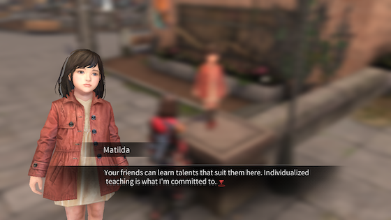
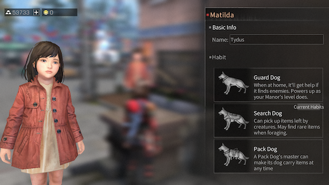
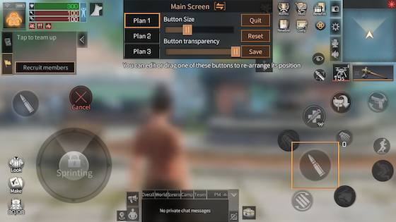
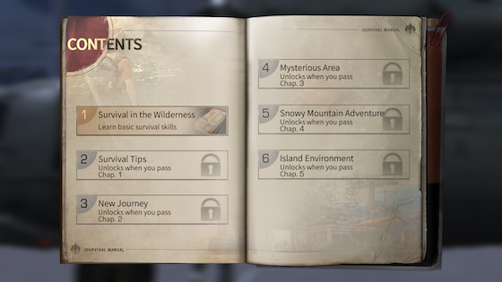
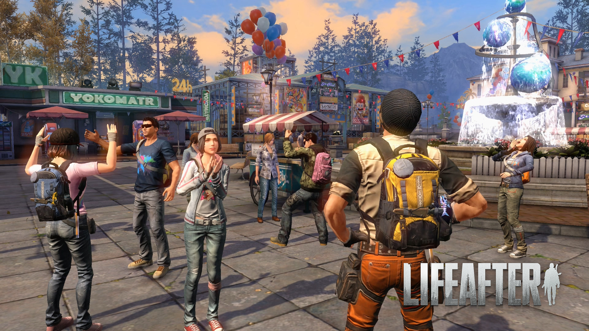
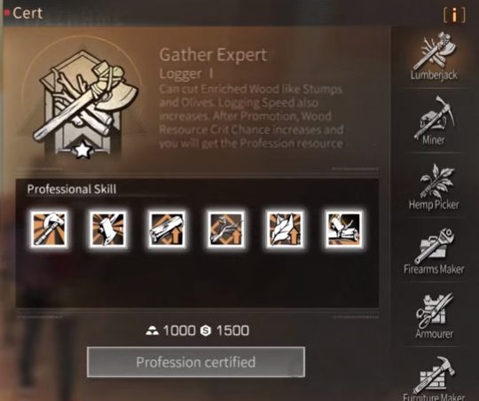
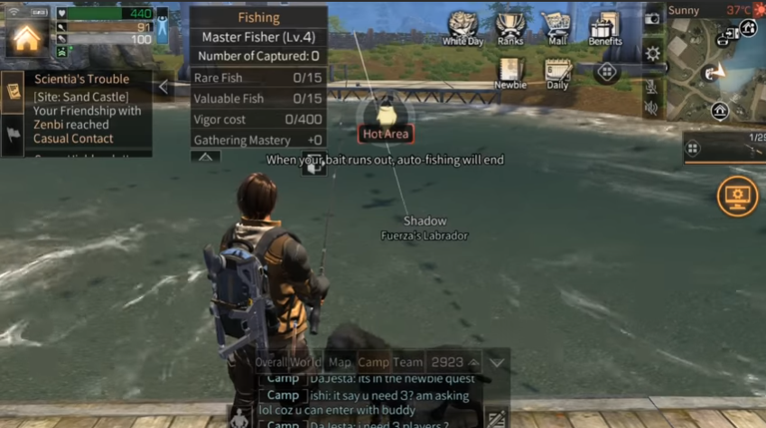
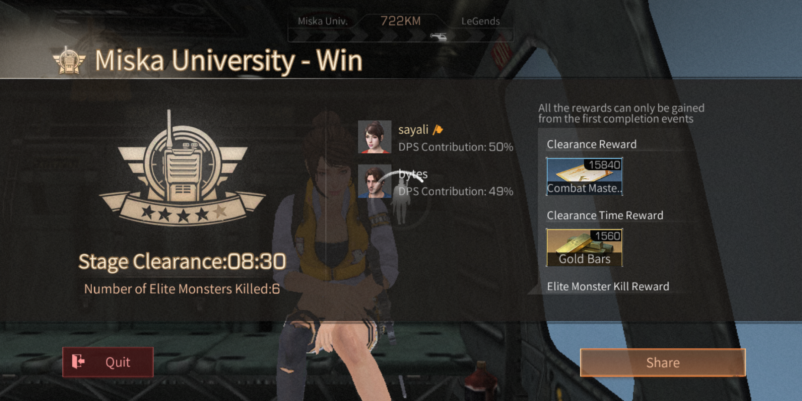

LifeAfter is a zombie survival game where players are tasked to SURVIVE in the post-apocalyptic virus-infected world by whichever way possible. The title is the English version of the popular Chinese game "The Day After Tomorrow". Do not dismiss the game as yet another game that forayed into the zombie genre as survival is the only motto behind this game, and players must make do with what they have and progress further in the virus-infected world. The splendid graphic design on the mobile platform makes it an even more exhilarating experience.
Players are tasked to hunt their food and must deal with a variety of scenarios as they scavenge for material to fend off zombies for longer.Additionally, one could even craft their own weapons and build a shelter to protect themselves and survive the day. Building traps around the shelters to fend off the enemy is present in the game, too. LifeAfter does a subtle cross between Resident Evil and the ever-popular Minecraft.Playing in third-person perspective, players could even make alliances with other players in the game and survive waves of zombies to make it through the day. Not only do they have to battle the zombies, but also have to brave the weather, wild animals and the diverse yet horrifying landscapes.
How to Play
Customization
Customization of the character is part of the role-playing experience of LifeAfter. When a game starts, players can customize the look of their player character, and can play either as female or male. Clothes, Hair and Face can be adjusted. After a satisfying result, players can name their character or randomize this process
Pets
After the character customization, players reach a new window to customize their pet companion, which is a dog. Players can choose from three races, Black-back, which resembles a german shepherd, Doberman and a Labrador.
There are options to change the colour of the collar and the animal's fur. When there is a satisfying result, the dog also can receive a name or players can use a random name. The dog can do a set of different actions and act on command.The players can teach the dog new skills
Backpacks Level
LifeAfter: Maps
Level 1
Resource slots: 21 & Food slots: 14
Level:
⭐
Fall Forest
Level 2
Resource slots: 23 & Food slots: 16
Level:
⭐⭐
Sandcastle
Level 3
Resource slots: 25 & Food slots: 18
Level:
⭐⭐⭐
Snow Highlands
Level 4
Resource slots: 27 & Food slots: 20
Level:
⭐⭐⭐⭐
Mounth swamp
Level 5
Resource slots: 30 & Food slots: 22
Level:
⭐⭐⭐⭐⭐
Mount Snow
Level:
⭐⭐⭐⭐⭐
Santopany
Level:
⭐⭐⭐⭐⭐
Redwood Town
Level:
⭐⭐⭐⭐⭐⭐
Levin City
LifeAfter Guide:Tips & Tricks
NetEase’s LifeAfter is the best survival mobile game I’ve ever stumbled upon. I love it so much that I even dedicate my time to write a beginner’s guide for it. I’ve never written any game guides before so this is sort of a big deal….well, at least for me. LifeAfter is not a common survival game. At that time of download (March 21st, 2019), I was still playing another survival game called Last Day on Earth and PUBG Mobile, an online multiplayer battle royale game.
My mind was blown when I got started with the game tutorial. I was like, “This is a freaking mash-ups of all the games I enjoyed: PUBG, Last Day on Earth, and The Sims combined!” Yes, you can build your own freaking manor with furniture and design it with beautiful wallpapers! It’s like having a virtual life altogether. No wonder it quickly become one of the most popular zombie survival game for mobile. Watch the trailer below!
1. Choose The Right Pet
From the beginning during the creation of your character, you get to choose your dog type. On my first character, I chose a Doberman. Later on, I read from a veteran player to choose a Labrador because you’ll be given with 2 extra storage slots. I chose Labrador when I created a new character.

This is Matilda and you can find her at Hope 101. You can look for her when you want to set your dog habit or wish to change it. To change it, it will cost you 1000 gold bars

If you’re just getting started, you might want to make your dog a Pack Dog as recommended by many other veteran players. I chose Search Dog because I was too lazy to pick up items left off. Last but not least, please remember to feed your dog. A starving and grumpy dog will do you no good.
2. Do the tutorial
If you’re new to the game, it’s obvious that you’ll need to do the tutorial. If you’re a seasoned player from another server, you can skip the tutorial by answering a few questions or you can do it with a friend which will give you 300 friendship points (the minimum required for you to co-habilitate later on if you wish to.)Well, It's best to do the tutorial so that you can learn about the game mechanism
I went through the tutorial 2nd time around so I could get some refresher on the backstory. I made the walkthrough videos to assist those who want to cruise through it easily.
3. Customize Your Controls

Click on the settings (the gear icon on the top left of your screen below the camera icon), go to Controls. Select left fixed point and customize. Enlarge the move button. Those controls that I won’t be using particularly in scenes or during combat, I would shrink its size further and placed them towards the corner to have a more visible screen. I also placed my grenade closer to my shooting button so it’s easier to use them. I shifted my run button to the top of the jump button since I wouldn’t really need it considering I can just sprint from the move button.
Sometimes, players always use the defualt controls which is okay, it's fine if you do it that way or what kind of controls where comfortable at
4. Try to complete the Newbie Quest as quickly as you can.

On the top right of your screen where the bunch of buttons are, look out for the Newbie quest. These quests come with great rewards once you complete them successfully.
I’m not going to write a full walkthrough on this Newbie quest because it’s pretty straightforward in the description on what you need to do. They also provided some brief video tutorials to help you through within the game itself
5. Join a camp

When you’re new and still residing at the development zone, you’ll most likely receive invitations from others to join their camp as you explore the locations. They’re mostly the camp mayors recruiting new members. However, if you haven’t receive any invitation to join a camp or you would like to join a camp that fit your criteria, you can talk to Billy at the Commerce Bureau, Hope 101.
You need to join a camp because it will be safer than sleeping or leaving your house in the middle of zombies that will attack you or your house.
6. Choosing the “right” profession

When choosing a profession, make sure you choose the right one that fits you. While you can change it, it will cost you real money.
There are advantages and disadvantages of each cert as it comes with certain professional skills and exclusive items available. Cert Guide post coming up soon!
7. Don’t forget to feed yourself

You’ll get hungry real quick when you’re gathering. Always have food items with you and check your Fullness bar. When you’re full, your gathering and movement speed increase. Besides, when your Fullness bar is dangerously low (red bar), you’ll lose HP and it’ll eventually kill you. Trust me, I’ve died of starvation.
Before you went adventuring, cook may foods especial those it have buffs to increase you logging speed,mining speed, sprinting or fishingp
8. Recover your dropped items immediately after you’re revived following a death.
When you die in the game, you might drop some items and also lose durability of your weapon and armours (depending on what mode you’re in).
You should make it a priority upon revival to retrieve your backpack if you could especially when you have rare items stored in it. You can check the mini map on the top right corner of your screen to locate your backpack.
9. Watch out for weather or environmental status of the location.
Walking out in the open when it’s raining in Fall Forest may get you sick and you also risk of being strike by lightning. Sandstorm in Sand Castles will suffocate you to death, Blizzard in Snow Highlands can freeze you to death and Typhoon in Santopany might blow you off the cliff or into the ocean.
The infected toxic green gas emitted in Mouth Swamp could also kill you. So there are essentially more things that could get you killed apart from the Infected and monsters.
10. Be as active as you can be during events

If you’re looking to progress in this game, get wonderful rewards or simply to make your campmates happy, be sure to stay active. Check on your Daily button at the top right corner of your screen.
There’s a list of events or tasks you can complete daily. Do the Camp Patrol and Military Drill with your campmates. Be there to support your camp in the event of Infected Invasion and Trap Infections especially if you’re the mayor!